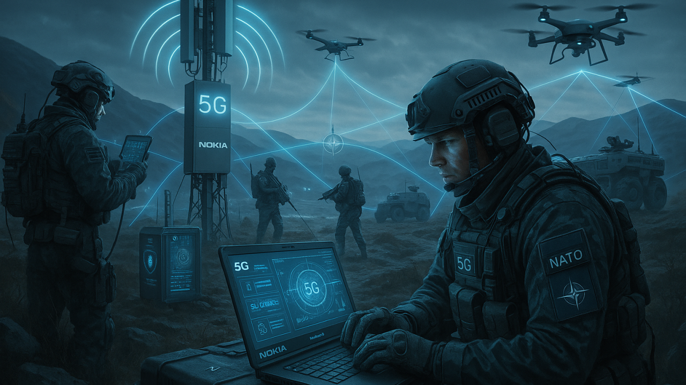
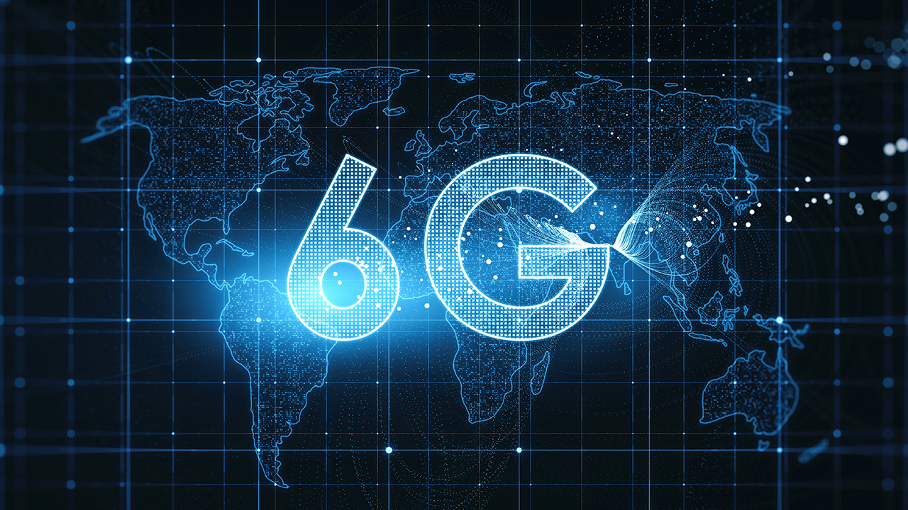
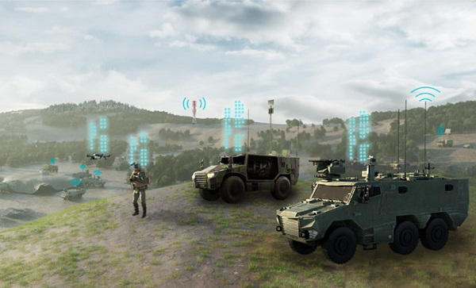

Veille Technologique - Réseaux 5G & Défense navale
Les evolutions recentes de la 5G militaire et les perspectives de la 6G dans les armees modernes
Aujourd'hui, je vais presenter ma veille technologique sur les evolutions recentes de la 5G militaire et les perspectives de la 6G. Ce sujet est en lien direct avec les reseaux, la cybersecurite et mon projet professionnel dans la Marine nationale.


Un theme coherent avec le BTS SIO
Reseaux, cybersecurite et communications critiques.
Defense et Marine nationale
Un sujet directement lie a mon projet professionnel.
Aller a l'essentiel
Comprendre ce qui est deja reel avec la 5G et ce que la 6G pourrait changer.
Une veille simple et reguliere
Survoler les symboles pour voir les outils utilises.
Le programme SCORPION
SCORPION illustre bien l'evolution actuelle : soldats, vehicules et systemes d'information sont relies dans un meme environnement numerise.
La 5G renforce cette logique avec des echanges plus rapides, une meilleure coordination et une remontee de donnees en temps reel.

Reactions plus rapides sur le terrain.
Video en direct et flux de donnees importants.
Capteurs, drones, vehicules et outils de commandement connectes ensemble.
Ce que ma veille montre
5G tactique deployable
Des reseaux mobiles peuvent etre installes directement sur le terrain.
Drones en essaim
La coordination de plusieurs drones devient plus fluide et plus rapide.
IA en temps reel
L'analyse des donnees devient plus rapide et plus automatique.
6G : ce qui change
- Des debits beaucoup plus eleves.
- Une latence quasi nulle.
- Des reseaux capables de s'auto-optimiser.
Le point sensible
- Interception des communications.
- Brouillage des reseaux.
- Cyberattaques sur les infrastructures.
Un avantage strategique
- Etats-Unis, Chine et Europe investissent massivement.
- La maitrise reseau devient un enjeu de souverainete.
- Performance et securite doivent avancer ensemble.
Ce que je retiens : la guerre moderne ne se joue plus seulement sur le terrain, mais aussi dans la maitrise des reseaux et de l'information.
En resume
La 5G
Elle est deja en cours d'integration dans les armees.
La 6G
Elle annonce des reseaux plus intelligents, plus rapides et plus autonomes.